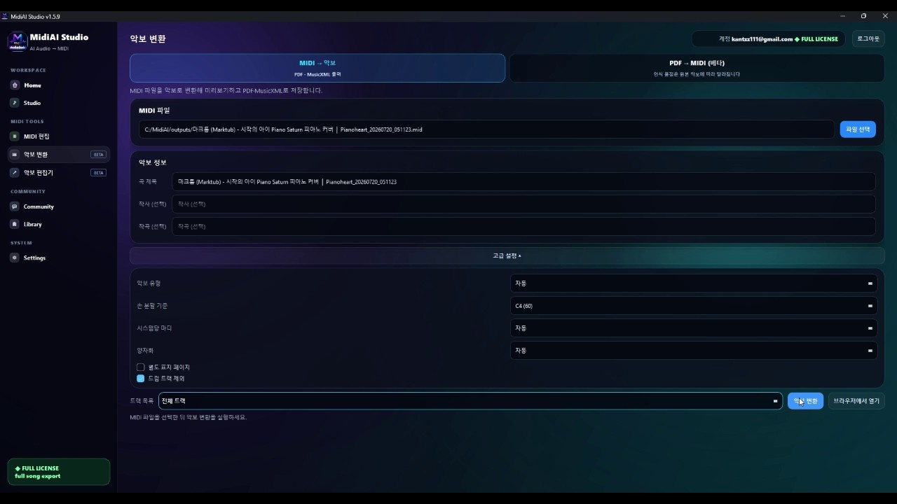

Guide · Sheet music & OMR
Turning a PDF Score Into Playable, Editable MIDI
Most musicians reach for a PDF-to-MIDI workflow because they already have the music in front of them — a downloaded lead sheet, a scanned method book, a chart a bandmate emailed — and they simply want it to move. Playback, transposition, and re-voicing are all trivial once the notes live as MIDI, but a PDF on its own is stubbornly frozen.
The gap between those two states is wider than it looks. A PDF is a description of ink on a page, not a description of pitches and durations, so something has to interpret the visual grid of staff lines, note heads, and stems and rebuild the musical meaning behind them. That interpretation is exactly what a tool like MidiAI Studio automates, and understanding how it works makes your results dramatically more reliable.
This guide walks the whole path in the order you will actually meet it: what the file holds, how recognition rebuilds the score, where you should expect to step in, and how to export something a DAW will respect. Nothing here assumes you read engraving software manuals for fun.

What a PDF actually contains before conversion begins
Converting PDF to MIDI means extracting the pitch, timing, and duration of every note printed on the page and writing them into a Standard MIDI File. Unlike a static image, the resulting file knows that the third note in measure four is a G4 quarter note, which is why you can suddenly transpose the whole piece down a fourth or slow it to half tempo without touching a pencil.
The process is often called optical music recognition, and it is the musical cousin of the OCR that reads text. Instead of decoding letters it decodes note heads, accidentals, clefs, and time signatures, then reassembles them into a timeline. The quality of that timeline depends heavily on how cleanly the original was engraved or scanned.
Why page layout matters more than most players expect
Recognition starts by locating staff systems and measuring the exact distance between staff lines, because that spacing becomes the ruler for every vertical pitch decision. Once the staff geometry is known, the engine can say that a note head sitting on the second line from the bottom of a treble staff is a G, and it repeats this reasoning down the page.
Rhythm is inferred from two clues at once: the shape of each note (filled head, stem, flags, or beams) and the horizontal spacing between events. Good engravings space notes proportionally, which lets the engine cross-check a printed eighth note against the gap that follows it, and MidiAI Studio leans on both signals so a smudged flag does not silently become a quarter note.
Finally the pieces are stitched into a MIDI timeline: clefs and key signatures set the pitch baseline, time signatures define the bar grid, and repeats or voltas are unrolled into a linear performance. Multi-voice piano writing is the hardest part here, because two rhythms share one staff and the engine must keep them on separate MIDI channels rather than mashing them together.
Reading rhythm from spacing versus reading it from data
A two-page Clementi sonatina, scanned from a method book
Imagine a scanned copy of Clementi's Sonatina in C, Op. 36 No. 1, first movement — bright, mostly two-voice piano writing at around 120 BPM. The scan is a little gray and slightly rotated, which is typical of a photocopied lesson book rather than a clean publisher PDF.
After running it through MidiAI Studio, the Alberti-bass left hand comes through cleanly because the pattern is repetitive and evenly spaced, but a couple of the right-hand ornaments in the second theme get flattened into plain notes. That is expected: a turn or a trill is a shorthand the printed page trusts a human to expand.
The fix takes two minutes. You nudge the tempo to a true 120, restore the two ornaments by ear, and confirm the key stayed in C major with no stray accidentals. The result plays back convincingly and is ready to transpose for a student who is more comfortable in a different hand position.

Handling multi-stave piano systems without losing voices
- Start with the best possible source file. Prefer a publisher-generated PDF over a phone photo. If you only have paper, scan at 300 dpi in grayscale and keep the page square; a five-degree tilt forces the engine to guess at staff angles and costs you accuracy you will pay back in edits later.
- Confirm the clefs, key, and meter before trusting pitches. The first thing to verify after import is that each staff kept its correct clef and the key signature matches the printed one. A misread bass clef shifts an entire hand by a sixth, so catching it here saves you from re-pitching dozens of notes.
- Isolate the hardest system and check it note by note. Pick the busiest measure — usually a run or a chord-heavy passage — and compare it against the page. If that spot is right, the calmer measures almost certainly are too, and you have found your worst case quickly rather than at the end.
- Restore ornaments, ties, and voicing by hand. Trills, turns, and tied notes across barlines are the predictable soft spots. Expand ornaments to taste and reconnect any ties the engine broke, keeping each voice on its own track so later editing stays sane.
- Export with a tempo map, not a single flat tempo. If the piece has ritardandos or a written tempo change, write those into the MIDI tempo track before export. A DAW will honor that map, and MidiAI Studio can carry it through so your playback breathes instead of marching.
Where optical music recognition still hands off to you
- Deskew and crop scans before import so the staff detector is not fighting the page edges.
- Convert one movement at a time; a 40-page PDF is 40 chances for a single system to derail a long batch.
- Keep the original PDF open side by side so verification is a glance, not a memory test.
- Name your MIDI tracks by hand (Right Hand, Left Hand) immediately, before the layout leaves your head.
- Save an untouched export first, then edit a copy, so you can always diff against the raw recognition.
Getting articulation and dynamics into the MIDI stream
- Trusting a tilted scan: Even a slight rotation smears the staff grid and multiplies pitch errors; straighten the page first.
- Ignoring the key signature: A missed sharp in the key means every affected note is a semitone off and playback sounds subtly wrong everywhere.
- Merging both hands to one track: Collapsing a grand staff into a single track makes velocity and articulation edits far harder than they need to be.
- Exporting before checking ties: Broken ties add phantom re-attacks that ruin legato lines you cannot hear until you listen closely.
- Batch-converting a whole book blind: Errors compound page to page; spot-check early so you do not clean up fifty systems at once.
Verifying the conversion against the printed page
The deeper you go, the more you notice that PDF-to-MIDI quality is decided long before you press convert — it is decided at the scanner. Publishers who export directly to PDF from engraving software hand the engine razor-sharp geometry, while a third-generation photocopy hands it a guessing game. Treat source quality as the single biggest lever you control.
It also helps to think in voices rather than notes. A pianist reads a grand staff as two or more independent lines that happen to be printed together, and the most useful conversions preserve that separation. When MidiAI Studio keeps the soprano melody apart from an inner alto line, your later edits — swelling one voice, muting another — become trivial instead of surgical.
Exporting stems, tracks, and tempo maps that survive a DAW
There is a limit worth respecting: recognition reconstructs what was written, not what a performer would do. Rubato, voicing balance, and pedaling are interpretive, and no amount of accuracy will invent them from a clean page. The MIDI is a faithful skeleton you then bring to life.
Finally, keep your expectations calibrated to genre. Solo piano and hymn-style four-part writing convert beautifully; dense contemporary scores with clusters, cross-staff beaming, and unusual notation are where you should plan for hands-on cleanup. Knowing which bucket your PDF falls into is half of a smooth session.
FAQ
Straight answers for musicians researching convert PDF sheet music to MIDI. Expand any question—answers stay on this page so you do not bounce away mid-read.
Can I convert a PDF to MIDI if the original was a photo of paper sheet music?
Yes, but photos are the hardest input. Uneven lighting and perspective distortion confuse staff detection, so flatten the image and boost contrast first; a proper 300 dpi scan will always beat a snapshot.
Will PDF-to-MIDI preserve fingering numbers and pedal markings?
No — those are performance annotations, not notes, so they are dropped. The MIDI carries pitch, timing, and (where legible) dynamics, but fingerings and pedal text live only on the printed page.
How many pages can I realistically convert at once from a PDF?
Technically many, but practically you should work movement by movement. Verification is per-system, so smaller batches keep any single misread from hiding inside a long export.
Does a locked or password-protected PDF block conversion?
A restricted PDF often prevents the tool from reading its contents at all. Remove the restriction using software you are licensed to use before attempting recognition.
Why did my converted PDF lose the repeat signs?
Repeats are structural instructions rather than notes. Good conversion unrolls them into a linear performance, but if a repeat was missed you can duplicate the section manually to match the intended form.